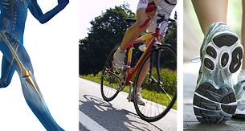
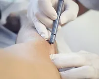
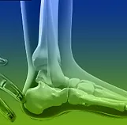
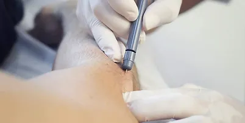
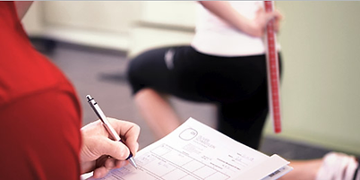

KINESIOLOGÍA DEPORTIVA
En ésta area trabajamos con deportistas amateurs y profesionales, diseñando protocolos de rehabilitación (incluyendo a pre y post quirúrgicos), con el objetivo de volver al deporte en óptimas condiciones. Ésta metodología incorpora el trabajo de campo.
KINESIOLOGÍA HP (High Performance)
Para los deportistas de Elite, incorporamos a los tratamientos: Microelectrólisis Percutánea, Core Stability, Taping Neuro muscular, Evaluaciones funcionales, Técnicas osteopáticas.
KINESIOLOGÍA TRAUMATOLÓGICA
Orientado al tratamiento y rehabilitación del paciente con lesiones musculo-esqueléticas, utilizando diversos agentes físicos (FKT), terapias manuales y ejercicios posturales correctivos, con el fin de reinsertarlo de manera eficaz y efectiva a sus actividades diarias.
M.E.P.
La MICROELECTROLISIS PERCUTANEA (MEP), consiste en la aplicación, (por medio de una aguja de acumpuntura), de una corriente microgalvánica, con el fin de regenerar de manera óptima los tejidos dañados. Con excelentes resultados en lesiones agudas, subagudas y crónicas tales como tendinitis y tendinosis, fascitis, desgarros, fibrosis, etc.
EVALUACIÓN Y PLANIFICACIÓN
Mediante una precisa EVALUACIÓN estática, dinámica y funcional, siendo a su vez integral y útil, se llevará a cabo una PLANIFICACIÓN acorde a sus necesidades con el fin de, no solo recuperar al paciente en su totalidad, sino que además disminuirá el riesgo en potenciales lesiones previsibles.